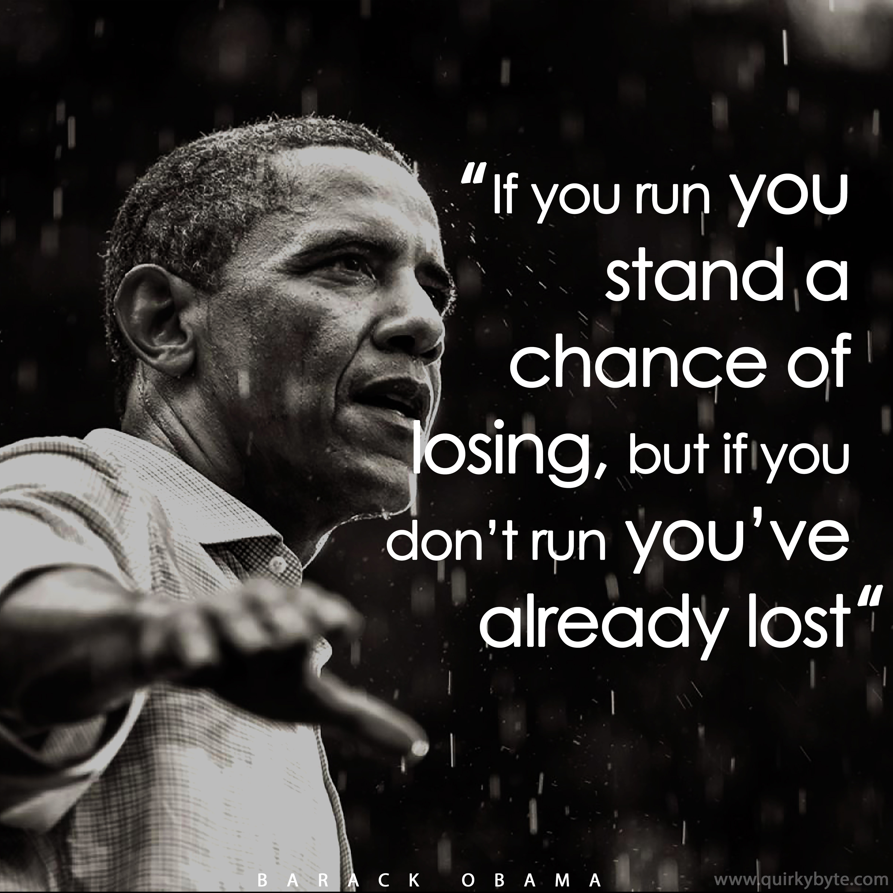

In "A Promised Land," a 768-page autobiography (the first volume in a planned two-volume set) published in November 2020, which covers his early years through most of his first term as president, Obama wrote surprisingly little about the racism he personally faced growing up and during his political career—except as it was experienced by Michelle and his daughters. But, reflecting on his experiences as a young man, Obama wrote that at one point in his presidency he reflected on: "The multiple occasions when I'd been asked for my student ID while walking to the library on (Columbia University's) campus, something that never seemed to happen to my white classmates. The unmerited traffic stops while visiting certain 'nice' Chicago neighborhoods. Being followed around by department store security guards while doing my Christmas shopping. The sound of car locks clicking as I walked across the street, dressed in a suit and tie, in the middle of the day. "Moments like these were routine among Black friends, acquaintances, guys in the barbershop. If you were poor, or working-class, or lived in a rough neighborhood, or didn't properly signify being a respectable Negro, the stories were usually worse." Just a few of countless examples of racism that Obama faced over the years include: The birther debate: Obama was dogged throughout his presidency by rumors that he was not an American by birth. Indeed, Donald Trump boosted his own rise to power by fueling this discredited rumor. The “birthers”—as the people spreading this rumor are known—say that he was born in Kenya. Although Obama’s mother was a White American and his father was a Black Kenyan national. His parents, however, met and married in the United States, which is why the birther conspiracy has been deemed equal parts silly and racist. Political caricatures: Before and after his presidential election, Obama was depicted as subhuman in graphics, email, and posters. He was portrayed as a shoeshine man, an Islamic terrorist, and a chimp, to name a few. The image of his altered face has been shown on a product called Obama Waffles in the manner of Aunt Jemima and Uncle Ben. The “Obama is a Muslim” conspiracy: Much like the birther debate, the debate over whether Obama is a practicing Muslim appears to be racially tinged. While the president did spend some of his youth in the predominantly Muslim country of Indonesia, there’s no evidence that he has practiced Islam. In fact, Obama has said that neither his mother nor his father was particularly religious. The racist tropes morphed into concerns over potential threats of physical violence and even assassination when Obama ran for president in 2008. "There were concerns about his security that were very real and very dark," David M. Axelrod, chief strategist for Obama's presidential campaigns said, referring to the increased racism and threats Obama faced after he won the Iowa Caucus in 2008 and become the frontrunner for the 2008 presidential nomination. In the first installment of a television documentary series called "First Ladies," which covered the experiences of Michelle Obama, CNN noted that Obama and his family were "given a security detail earlier than any other presidential candidate in history." In that same segment, Van Jones, a CNN political commentator, stated: "There was a resignation in the Black community, that you cannot rise up without being chopped down... Medgar Evers, Malcolm X, Dr. (Martin Luther) King (Jr.), if you come from the Black community, almost every hero you read about was killed." And, it wasn't only Barack who came under attack. After Michelle began to campaign for her husband, she had to withstand withering racist tropes—along with Barack. After the couple did a fist bump during one campaign stop, a number of people in the media, according to CNN, began to call the couple "jihadists," a derogatory term for a Muslim who advocates for or participates in a holy war waged on behalf of Islam. One television network began to refer to Michelle as Barack Obama's "baby mama," according to the CNN report. Marcia Chatelain, an associate professor at Georgetown University, noted: "Michelle Obama was met with every single stereotype about African-American women magnified by a million." According to the CNN report, and Michelle Obama, herself, in her autobiography, "Becoming," many people and those in the media began to use the "easy trope of the angry Black woman" to try to humiliate her. As Michelle Obama wrote about her experience on the campaign trail and after becoming first lady: "I've been held up as the most powerful woman in the world and taken down as an 'angry black woman.' I've wanted to ask my detractors which part of that phrase matters to them the most—is it 'angry' or 'black' or 'woman?'" And the family only suffered more racism and threats once Obama was president. As Obama told NPR in 2015 referring to the racism he faced once he held the nation's highest office: "If you are referring to specific strains in the Republican Party that suggest that somehow I’m different, I’m Muslim, I’m disloyal to the country, etc., which unfortunately is pretty far out there and gets some traction in certain pockets of the Republican Party, and that have been articulated by some of their elected officials, what I’d say there is that that’s probably pretty specific to me and who I am and my background, and that in some ways I may represent change that worries them." Michelle Obama was more direct in describing the intense, daily onslaught of racism and threats the family faced during Barack's presidency. Michelle, and Barack in his biography "A Promised Land," talked about the sometimes daily threats and racist insults the family experienced, but Michelle was a particular target, singled out for insults. The Guardian, a British newspaper, reported in 2017 on what Michelle Obama told a crowd of 8,500: "Asked which of the falling glass shards cut the deepest, she said: 'The ones that intended to cut,' referencing an incident in which a West Virginia county employee called her an 'ape in heels,' as well as people not taking her seriously because of her colour. 'Knowing that after eight years of working really hard for this country, there are still people who won’t see me for what I am because of my skin colour.'” Key Speeches
